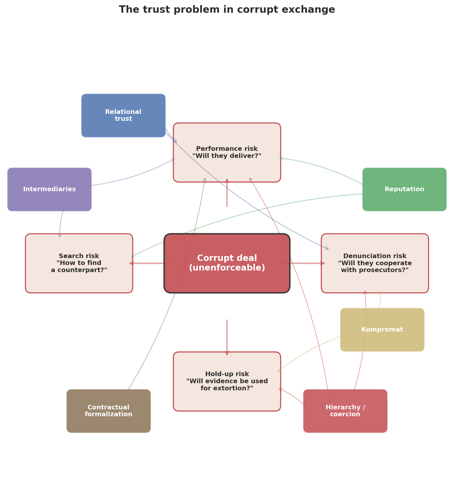
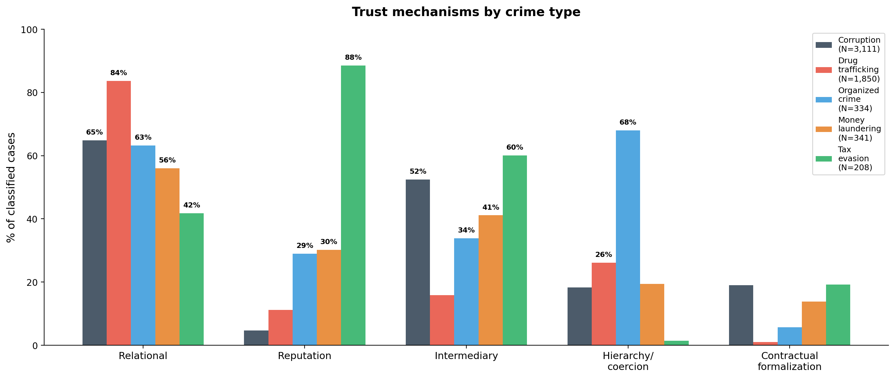

How Is Illegal Activity Organized?
2025-10-31
How do criminals trust each other?
And why does it matter for policy?
The core insight
Every illegal transaction has the same problem:
Agreements cannot be enforced in court.
A drug supplier who is cheated cannot sue.
A bribed official who doesn’t deliver cannot be held liable.
A wealth manager who absconds with hidden assets cannot be reported.
So how do they solve this? → The organizational form is shaped by which trust technologies are available.
Two cases, two solutions
Odebrecht (Brazil, 2001–2016)
Latin America’s largest construction firm paid $788M in bribes across 12 countries.
Created a formal corporate department — the Structured Operations Division — with encrypted IT systems, codenames for every politician, and a CEO-maintained spreadsheet tracking who was owed what.
UBS (Switzerland, 2000–2007)
Switzerland’s largest bank helped ~20,000 US clients hide $20 billion from the IRS.
Bankers traveled to the US under false pretenses, trained in counter-surveillance, carried encrypted laptops, and smuggled diamonds in toothpaste tubes.
Same trust problem. Opposite solutions.
Three sources of trust
All trust in illegal exchange comes from three sources of cost for defection:
| Primitive | If I defect… | Dominates in… |
|---|---|---|
| Relationship | …I lose a valuable ongoing interaction | Drug trafficking (84%), corruption (65%) |
| Community standing | …third parties learn and I lose access | Tax evasion (89%), organized crime (29%) |
| Formal contract | …counterparty invokes the legal system | Corruption (19%), tax evasion (19%) |
Plus modifiers (kompromat intensifies relationships), architecture (intermediaries chain trust links), and configurations (hierarchy = relationship + contract + power asymmetry)
Which primitives are available?
| Relationship | Community standing | Contract | |
|---|---|---|---|
| Drug trafficking | ✓✓ kinship, repeated | punishment | ✗ |
| Organized crime | ✓✓ clan-based | punishment | ✗ |
| Corruption | ✓ repeated deals | ✗ hidden | ✓ insider |
| Money laundering | ✓ professional | reliability | ✓ |
| Tax evasion | weak | reliability | ✓ |
Social position → which primitives are accessible → organizational form
The trust framework

Data: 6,486 cases across crime types

16 sources · 173 countries · 6 crime types · LLM-extracted trust mechanisms
Example: Odebrecht → structured extraction
Delação Fernando Migliaccio, Termo 05 (Lava Jato plea bargain)
[…] The Structured Operations Division maintained offshore accounts in Portugal, Switzerland, Austria, Antigua […] payment orders via phone, email, and the DROUSYS encrypted system […] each collaborator controlled distinct account sets […] fabricated contracts to justify repatriation of funds […] doleiros and lawyers as compartmentalized intermediaries.
| Field | Extracted |
|---|---|
| Trust mechanisms | Relational ✓ Intermediary ✓ Contractual ✓ Kompromat ✓ Hierarchy ✓ |
| Key insight | Corruption bureaucratized — a formal department with IT systems, codenames, and gatekeepers |
Stage 1: What we ask the LLM to extract
System prompt (excerpt):
Corrupt deals cannot be enforced in court. This creates trust problems: will the bribed official deliver? Will the firm actually pay the kickback? Will either party inform on the other? Will one side use evidence to extort the other? How did the parties even find each other safely? We want to understand how these problems were solved in each case.
Extraction fields (excerpt):
trust_problems: “free-form: who needed to trust whom, and why was trust difficult? E.g. ‘the firm needed to trust that the official would steer the contract after receiving payment; the official needed assurance the firm would not inform prosecutors.’”
trust_solutions: “free-form: how were the trust problems actually solved? What relationships, arrangements, threats, intermediaries, recording of evidence, repeated dealings, family ties, or other mechanisms enabled the corrupt parties to trust each other?”
Free text first → classify second. Avoids catch-all categories.
Stage 2: Classifying trust mechanisms
| Mechanism | Prompt definition (condensed) |
|---|---|
| Relational | Ongoing relationship whose value deters cheating. Subtypes: repeated interaction, kinship, friendship, ethnic/clan ties |
| Reputation | Community-level enforcement: third parties observe and gossip, so cheating is punished by the broader community, not just the dyad |
| Kompromat | Deliberate creation of mutual vulnerability. Compromising evidence, mutual blackmail potential, down payments as commitment devices |
| Intermediary | Third-party brokers, fixers, go-betweens who connect, guarantee, or enforce. They solve the search problem and can provide performance guarantees |
| Hierarchy | One party can directly punish the other through organizational authority, violence, or threats. Compliance is compelled |
| Contractual | Parties use formally legal contracts (consultancy agreements, agent commissions, subcontracts, contingency fees) to enforce informally illegal arrangements. The contract is real and legally enforceable — what is corrupt is the underlying purpose |
Input: free-text trust_solutions from Stage 1 → Output: 6 binary flags per case
Finding 1: Trust profiles differ sharply by crime type

Finding 2: Distance forces intermediaries
57% vs 26%
intermediary prevalence: cross-border vs domestic
Contracts make intermediaries hireable
The problem:
Building trust takes years.
How do you transact illegally with someone you’ve never met?
The solution:
Hire a broker via a legal contract.
Consultancy agreement, agent commission, wealth management contract
66% of intermediary cases involve formal commercial arrangements
Intermediary × contractual co-occurrence: \(\chi^2\) = 59, p < 10-14
The intermediary as escrow agent
The sequencing problem: who pays first?
- Payer moves first in 90% of FCPA cases → bears performance risk
- Three solutions:
| Solution | How it works | Prevalence |
|---|---|---|
| Repeated interaction | Shadow of future deals deters cheating | 47% |
| Intermediary as escrow | Broker holds payment, releases on delivery | 20% |
| Embedding | Bribe built into contract price (Oil-for-Food: 10% surcharge) | Rare |
The intermediary’s commission (1–5% on top of the bribe) is the market price of solving the trust problem
Trust profiles across crime types
N = 6,204 classified cases across 5 crime types
Why violence works there but not here
The paradox: reputation for violence requires attribution — but attribution is incriminating. How do criminals build it?
| Mechanism | How attribution stays out of court |
|---|---|
| Organizational branding | Narco-messages credit the cartel, not the individual operative |
| Witness deterrence | The reputation for violence prevents witnesses from testifying |
| Initiation rituals | Violence witnessed only by fellow gang members (Skarbek 2011) |
| Pattern signatures | Killing methods readable by community, not legal evidence |
Corruption can’t do any of this. Officials have legitimate positions where any attribution — community or legal — is catastrophic. No brand to absorb it, no violence to deter witnesses.
The intermediary as escrow agent
The sequencing problem: in a corrupt deal, who pays first?
| Solution | How it works | Frequency (FCPA) |
|---|---|---|
| Payer moves first | Firm pays bribe, hopes official delivers | 38% |
| Intermediary escrow | Agent holds funds, releases on performance | 20% |
| Embedding | Bribe in contract price, third party pays | 11% |
| Ongoing stream | Repeated small payments | 4% |
| Recipient first | Official delivers, then gets paid | 2% |
The intermediary’s commission (1–5% on top of the bribe) is the market price of solving the trust problem.
The price of trust
If intermediaries solve the trust problem for a fee, the commission should reflect the cost of providing trust.
| Setting | Median commission | Why |
|---|---|---|
| Iraq Oil-for-Food | 10%, zero variance | Standardized tariff, no trust needed |
| Mexico (CFE, repeated) | 5% | Repeated dealings compress premium |
| Extractives (long-term) | 3% | Concessions over decades |
| Gabon (intermediary escrow) | 20% | Intermediary must solve bilateral trust |
| Defense (one-shot, high-value) | 20% | Trust must be purchased, not accumulated |
With repeated interaction: mean 10%. Without: mean 16.8% (p = 0.0002)
→ Relational trust and intermediary escrow are substitutes with observable prices
A sequencing test: does reputation work in corruption?
If reputation works, firms with track records of paying bribes should be trusted to pay after receiving the contract. Officials should deliver first.
What we find (772 FCPA cases):
- Payer moves first in 90% of cases
- Official moves first in only 2% (16 cases)
- In those 16: zero mention reputation as risk mitigation
Even JPMorgan, Siemens, Credit Suisse — firms with extensive bribery records — pay first.
Reputation does not function in corruption. Contrast: enablers deliver first in tax evasion (89% reputation).
The Drousys paradox: trust technology = prosecution evidence
Odebrecht’s encrypted system (Drousys) solved three trust problems:
| Function | Trust problem | How |
|---|---|---|
| Secrecy | Denunciation | Encrypted, separate from corporate IT |
| Coordination | Performance | Real-time tracking across 12 countries |
| Kompromat | Hold-up | Records = mutual hostage |
But the records that enabled trust became the prosecution evidence.
→ 77 executives signed plea bargains in a cascade — hierarchical trust collapses from the top down
→ Compare: Putin network (kinship) → zero defections. UBS (institutional) → bank pays fine, system continues.
When politicians CAN use violence: India
46% of Indian MPs face criminal charges; 31% face murder, kidnapping, assault (ADR 2024)
| Pattern | Mechanism | Example |
|---|---|---|
| Bahubali (strongman) | Violence IS the trust technology | Atiq Ahmad: 195+ cases, ran empire from jail |
| Resource mafia | Violence enforces corrupt monopoly | Sand/mining mafias kill journalists, RTI activists |
| Vertical integration | Criminal becomes politician to eliminate trust problem | Vaishnav (2017): “when crime pays” |
Chemin (2012): criminal politicians reduce bribes by 34% but increase violent crime by 25%
→ Violence and market corruption are substitutes, not complements
Connecting to the tax evasion literature
What they measure
- Alstadsæter, Johannesen & Zucman (2019): top 0.01% evade ~25% of taxes owed
- Zucman (2014): 8% of global wealth held offshore
- Johannesen & Zucman (2014): crackdowns redirect deposits between havens
- Johannesen et al. (2020): enforcement most effective against smaller evaders
What we add
- How is evasion organized?
- Why do crackdowns redirect rather than repatriate? → contractual trust is portable
- Why are the wealthy harder to catch? → redundant enabler networks
- Why do enablers comply? → professional reputation + legal contracts
Harrington (2016) · Findley, Nielson & Sharman (2014) · Seabrooke & Wigan (2017)
UBS: the trust infrastructure of tax evasion
| Trust mechanism | How UBS solved it |
|---|---|
| Institutional | Swiss banking secrecy law — criminal penalties for disclosure (Art. 47) |
| Reputation | 150-year brand; “your fear is unjustified… protection cannot be compromised” (2002 client letter) |
| Contractual | Wealth management agreements, QI agreement with IRS, nominee shell companies |
| Relational | Art Basel, yacht races, concierge services — quarterly personal visits |
| Kompromat | Mutual criminal exposure: neither side can report without self-incrimination |
| Intermediary | NY referral desk → Swiss bankers; external lawyers → Liechtenstein trust managers |
Every trust mechanism in our taxonomy — in a single case.
The Jahre case: when trust breaks down
Anders Jahre (1891–1982) — Sandefjord shipping magnate
- 1926: Lazard Brothers help establish Salemas in Panama — formally owned by the bank, Jahre is the real owner
- 1930s–70s: builds network of Panama and Liberian shells (Pankos, Cornwall Shipping, Intercontinental Chartering)
- Control maintained via management agreements — Jahre owns nothing on paper
- Thorleif Monsen (Cayman Islands) — his stråmann: holds shares formally, takes instructions from Jahre’s lawyer Bjørn Bettum
After Jahre’s death: Monsen transfers assets to Aall Trust and Banking Co. — his own bank on the Cayman Islands. Creates new foundations for himself and his family. The straw man ran away.
The opacity that hides assets from the tax authorities also hides them from the beneficial owner’s heirs.
The three-document system
How does a client trust a nominee who officially “owns” their assets?
| Document | Function | Trust problem solved |
|---|---|---|
| Nominee director declaration | Nominee commits to follow owner’s instructions | Performance risk |
| Power of attorney | Transfers operational control back to real owner | Hold-up risk |
| Undated resignation letter | Owner can remove nominee at will | Denunciation risk |
Contractual formalization as a trust technology — the core product of the enabler industry
Global wealth chains as trust architecture
US client (e.g. Olenicoff, $200M)
│
Wealth management agreement ←── contractual
│
UBS private banker (Switzerland)
│
Referral to external counsel ←── intermediary
│
Lawyer / consultant
│
Shell company formation ←── contractual + nominee
│
BVI / Liechtenstein / Panama entity
│
Numbered account (UBS Geneva)Each layer: a trust problem solved by a legal contract (Seabrooke & Wigan 2017)
When enablers betray: evidence from ICIJ
| Case | What happened | Trust failure |
|---|---|---|
| Cordish family (US) | Financial planner managing Cook Islands trusts diverted $12M to personal real estate | Enabler exploited information asymmetry |
| BVI shell operator | Ran a $33.5M Ponzi scheme against 132 investors using their own shell structures | Nominee turned predator |
| Trust protector | Redirected assets to his own relatives by misrepresenting beneficiaries’ wishes to Swiss trustees | Intermediary captured the chain |
“Once your money is offshore, you have no legal standing to go get it.”
When trust breaks down: two parallel stories
Odebrecht (corruption)
2015: Migliaccio discovers he is being set up as fall guy
Plea bargain cascade: 77 executives cooperate
Why? Asymmetric exposure — the company could blame “rogue employees” while individuals faced decades in prison
The Italiano spreadsheet — meant to enforce trust — became the prosecution’s key evidence
UBS (tax evasion)
2005: Birkenfeld discovers internal CYA memo preparing to scapegoat front-line bankers
Cooperation cascade: 54,000 taxpayers come forward; $16B recovered
Why? Asymmetric exposure — the bank could blame “rogue bankers” while individuals bore all risk
The 2006 whistleblower law ($104M award) provided a credible outside option
Both collapsed the same way: the institution tried to shift blame downward, and an insider defected.
Policy: disrupt the trust infrastructure
Target the mechanism, not just the jurisdiction
| Policy | Disrupts | Effect |
|---|---|---|
| Beneficial ownership registries | Intermediary opacity | Enablers become identifiable |
| Gatekeeper liability | Enabler supply | Fewer professionals willing to facilitate |
| CRS / AEOI | Cross-border trust chains | Restructuring, not repatriation |
| Whistleblower incentives | Asymmetric trust | Insiders defect when outside option > loyalty |
Birkenfeld’s $104M award triggered 54,000 voluntary disclosures and $16B in recoveries.
But: enforcement is regressive — wealthiest maintain redundant enabler networks (Johannesen et al. 2020)
What’s next
- Trust dynamics: 1,189 cases with breakdown/adaptation/formation data — how schemes evolve over time
- Deal structure: 772 FCPA cases with sequencing, fee structure, payment method
- Enforcement natural experiments: does CRS/AEOI change organizational form, or just redirect it?
- Enabler stratification: do wealthier evaders use different trust mechanisms?
- Validation: human-coded sample (80 cases) for inter-rater reliability
Paper: “How Is Illegal Activity Organized?” (6,486 cases, 6 crime types)
Thank you
6,486 cases · 6 crime types · 173 countries
Odebrecht needed codenames and encrypted systems. UBS needed Swiss law and a 150-year brand. Same problem — opposite solutions.
Skatteforsk seminar · NMBU, Ås